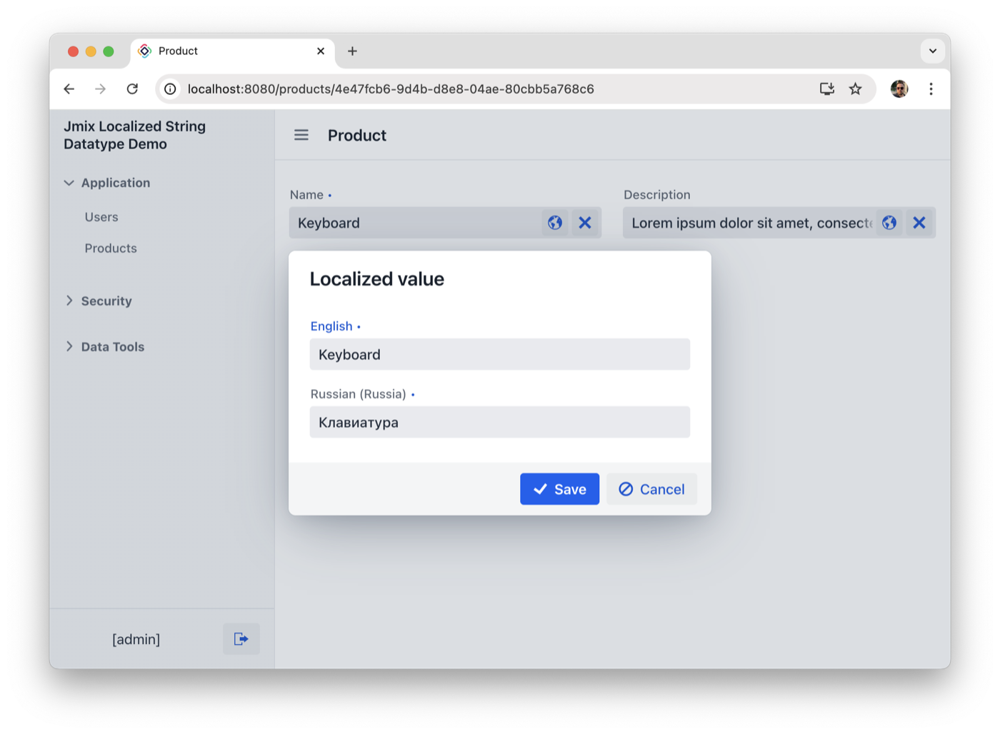
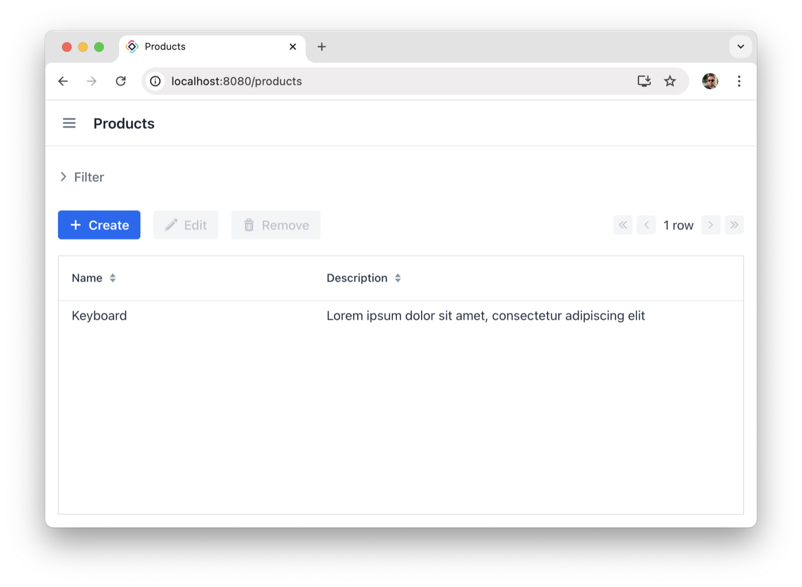
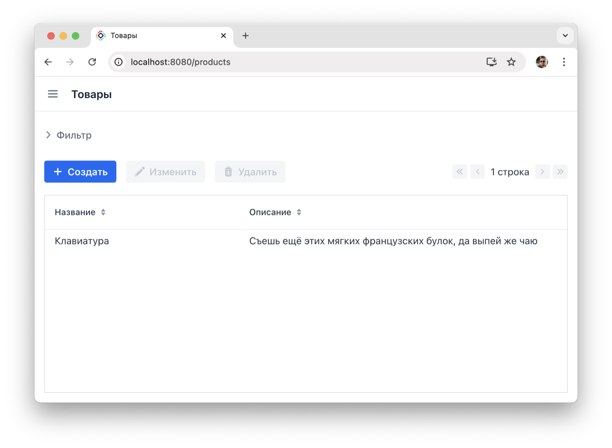
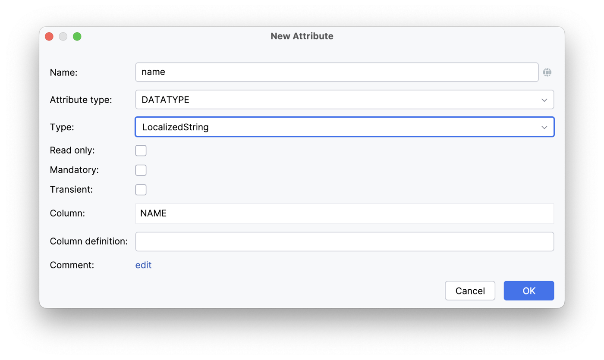
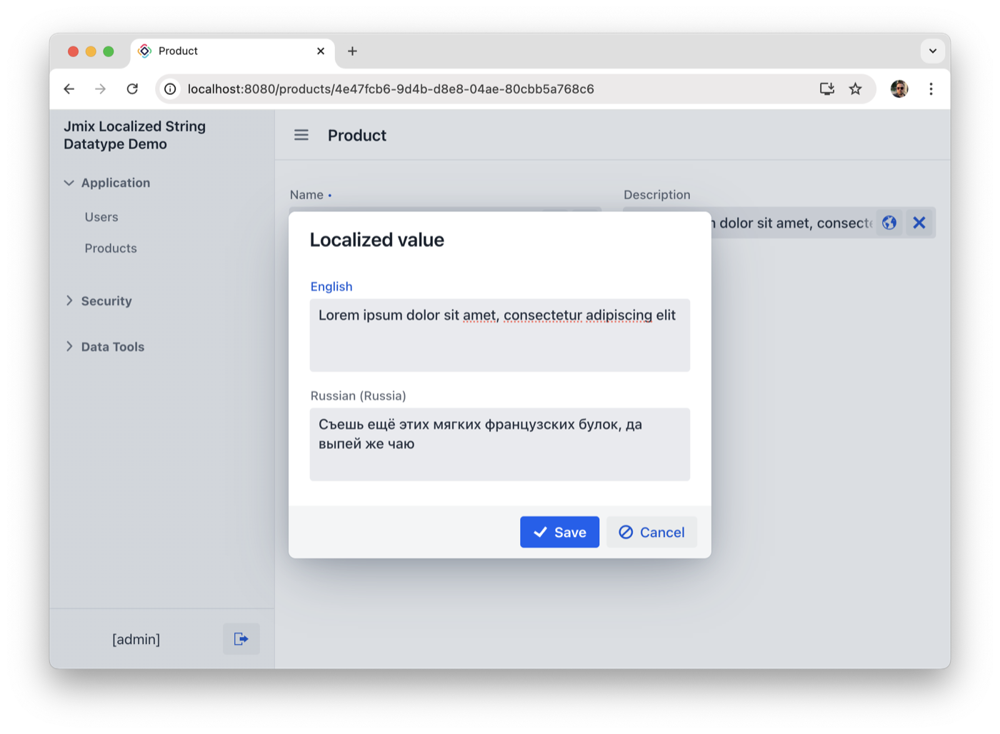
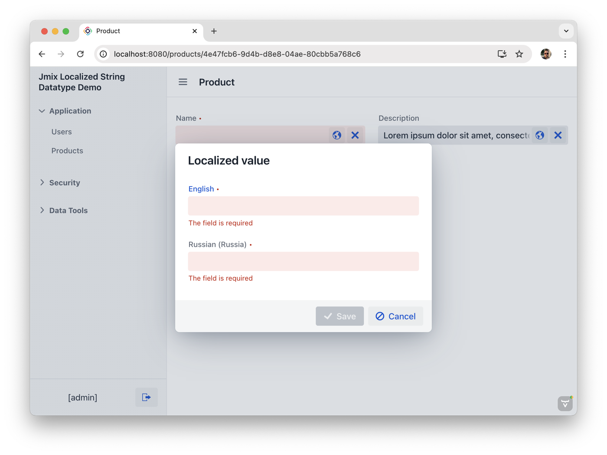
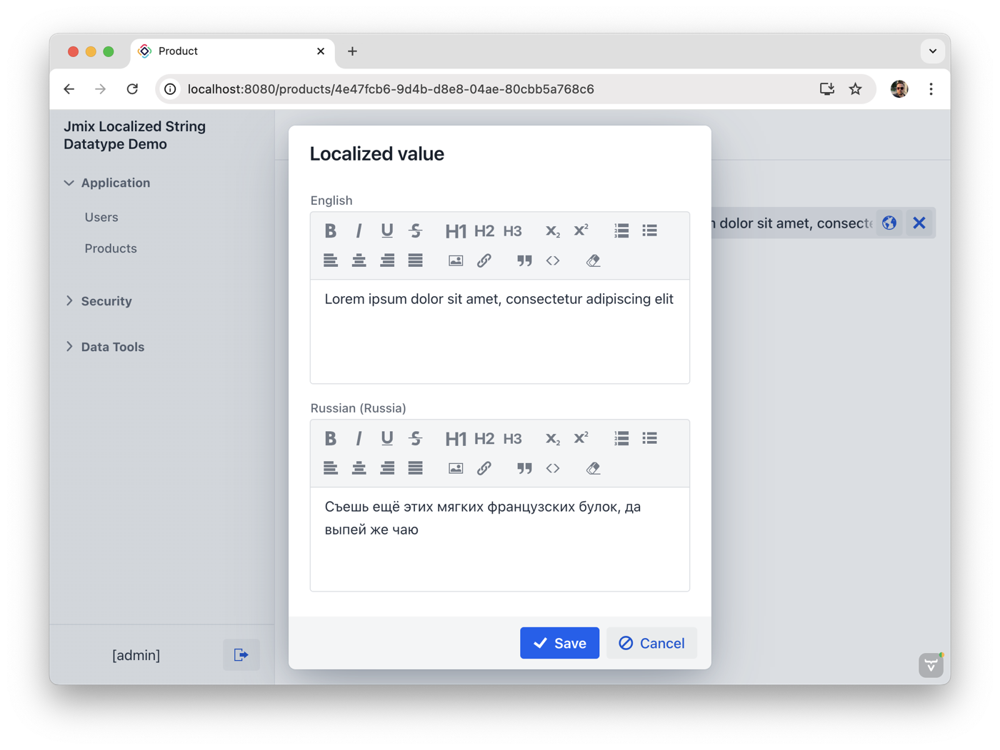

Use one domain type
Add a LocalizedString attribute to your entity and keep every locale together in one Jmix datatype.
Locale-aware entity text for Jmix apps. Store multilingual values as one attribute, edit them in Flow UI, validate every locale, and sort by the current user's language.
implementation 'com.glebfox.jmix.locstr:jmix-localized-string-datatype-starter:1.1.0'Add a LocalizedString attribute to your entity and keep every locale together in one Jmix datatype.
Attach value_localizedStringEdit to a ValuePicker and open a focused dialog for localized values.
Components display the value that matches the current locale, with sorting for list views and data containers.
implementation 'com.glebfox.jmix.locstr:jmix-localized-string-datatype-starter:1.1.0'
The add-on provides a ready-to-use action for ValuePicker. It switches
between compact and multiline fields, checks unsaved changes, and accepts custom
validators or field providers for richer input.
<valuePicker id="nameField" property="name">
<actions>
<action id="localizedStringEdit" type="value_localizedStringEdit"/>
<action id="clear" type="value_clear"/>
</actions>
</valuePicker>
Use @LocalizedStringNotNull, @LocalizedStringNotEmpty, or @LocalizedStringNotBlank to enforce locale coverage.
Apply @LocalizedStringSize, @LocalizedStringLength, and @LocalizedStringPattern to each localized value.
Install validators or a field provider to customize the edit dialog while keeping the same entity attribute model.






Localized values are stored as JSON in one column, for example
{"en":"Keyboard","de":"Tastatur"}. Filtering by this datatype
is intentionally limited: Jmix GenericFilter and
PropertyFilter do not support it.